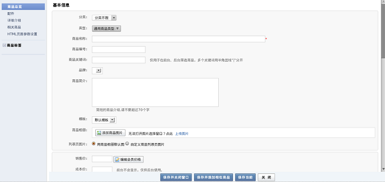

后台控制器专用基类, 默认情况下会开启session, 提供常用的页面渲染函数等.
后台控制器
sh: dot: command not found
直接跳转到指定地址
参数
array $url
返回
null
<?php
...
$this->redirect(array('app'=>'desktop','ctl'=>'admin_default','act'=>'index'));
...
跳转到当前页面
function location_to()
显示后台列表函数
后台的列表区域自定义iframe
function index(){
$this->url_frame('www.baidu.com');
}
显示页面,默认配合target=_blank使用时，显示的页面不包含框架的其他页面，只是本身页面
'href'=>'index.php?app=b2c&ctl=admin_goods_editor&act=add',
'target'=>'_blank'),
...
$this->singlepage('admin/goods/detail/frame.html');

显示页面,如果page配合target=_blank使用时,显示的页面包含在框架里面，显示在后台的自定义列表中
如果是page配合target=dialog使用时，则显示的是弹出层页面（display配合target=dialog使用时也有同样的效果）
例1
'href'=>'index.php?app=b2c&ctl=admin_goods_editor&act=add',
'target'=>'_blank'),
...
$this->page('admin/goods/detail/frame.html');
例2
'href'=>'index.php?app=b2c&ctl=admin_member&act=add_page','target'=>'dialog::{title:\''.
app::get('b2c')->_('添加会员').'\',width:460,height:460}'),
...
$this->page('admin/member/new.html');
信息提示，ajax输出,begin end方法信息输出调用此方法
function splash($status='success',$url=null,$msg=null,$method='redirect',$params=array())
参数
string $status=error是输出错误信息，默认输出正确提示信息
string $url自定义拼接的URL,一般为空
string $msg要输出的信息
string $method
array $params当参数为array('splash'=>'1') 时，则表示只是输出自定义信息
例1
<?php
//输出正确信息
$this->splash('success','','正确信息');
//输出错误信息
$this->splash('error','','错误信息','redirect',array('splash'=>'1'));
跳转到当前app的，控制器中的某个方法中进行运行
function jumpTo($act='index',$ctl=null,$args=null){
参数
string $act控制器中的方法名
string $ctl控制器名
array $args参数
判断当前用户的权限
display和base_render中的display方法一样
display配合target=dialog使用时，显示的页面为弹出层
'href'=>'index.php?app=b2c&ctl=admin_member&act=add_page','target'=>'dialog::{title:\''.
app::get('b2c')->_('添加会员').'\',width:460,height:460}'),
...
$this->display('admin/member/new.html');
和base_render中的pre_display方法一样，只是注册的service是不一样的.
这个service是desktop_render_pre_display
登录之前的预先验证